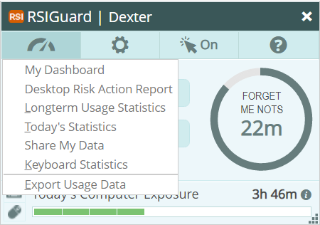

The Data menu of the main RSIGuard window (pictured below) allows you to view information about your computer usage. Open this menu by clicking on or pressing Alt+D. If your organization uses Cority OES for assessment and training, the Data menu will instead take you directly to your Cority Dashboard. In that case, to view the menu items described here, you must hold the CTRL key and click on the Data menu.

RSIGuard DataLogger Data
RSIGuard records information about how you use the computer in order to help you work more safely. You can access the data RSIGuard collects via the Data menu. See DataLogger Analysis Whitepaper for detailed information about what data is collected and how you can use it.
My Dashboard
If your organization uses the Cority OES, you can click on My Dashboard to view your dashboard. This will give you access to training, messages, and more.
Desktop Risk Action Report
This report shows your current risk based on what RSIGuard has observed over the past 4 weeks. It includes personalized tips and actions you can take to lower your risk score. Learn more about the report.
Longterm Usage Statistics
This item opens your usage data in the RSIGuard companion application UserInsight. UserInsight lets you see your data in graphical form over time (weeks, months, year). You can also view help on how to use UserInsight.
Today's Statistics
This item provides a detailed numerical view of how you've used your computer today.
Share My Data
This feature lets you upload your data anonymously to the RSIGuard cloud, and then provides you a link you can use to share your data with someone else (e.g., co-worker, doctor, physical therapist, etc.)
Keyboard Statistics
This item lets you see which keys you use most frequently, how long you hold keys down, and how long it takes you to find each key. Along with other information, this information may be useful in selecting an ergonomic keyboard, choosing helpful ways to utilize the KeyControl feature, and to identify the cause of keyboarding issues you may have. It is not available in RSIGuard v6.0, but should be available in v6.1.
Export Usage Data
This option lets you save a copy of your RSIGuard DataLogger data. The copy can be used to back up data or transfer it to another computer.
 Data menu of the main RSIGuard window (pictured below) allows you to view information about your computer usage. Open this menu by clicking on
Data menu of the main RSIGuard window (pictured below) allows you to view information about your computer usage. Open this menu by clicking on